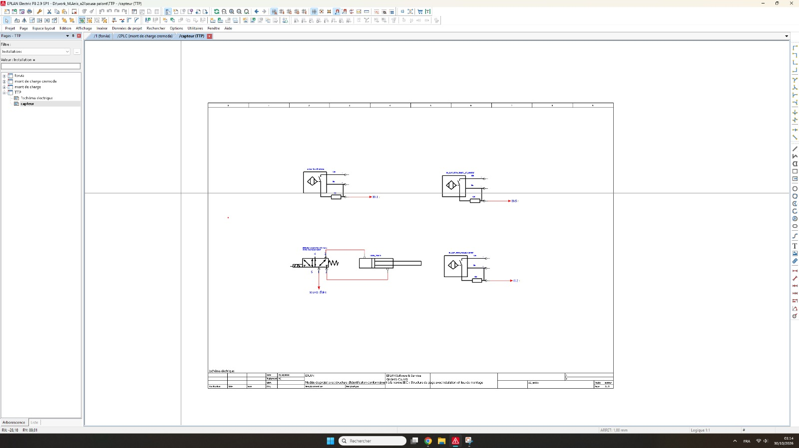

ÉTUDE EPLAN 01 · INTERFAÇAGE API
Câblage d’un module d’entrées numériques
Fonction : montre comment les signaux de terrain sont raccordés à un module d’entrées numériques d’API.
Mon travail : préparation et vérification de la représentation du câblage, identification des connexions des voies d’entrée et organisation des repères de signaux pour faciliter le suivi lors des contrôles de câblage et du dépannage.
Entrées d’APISignaux 24 V DCCâblage des signaux